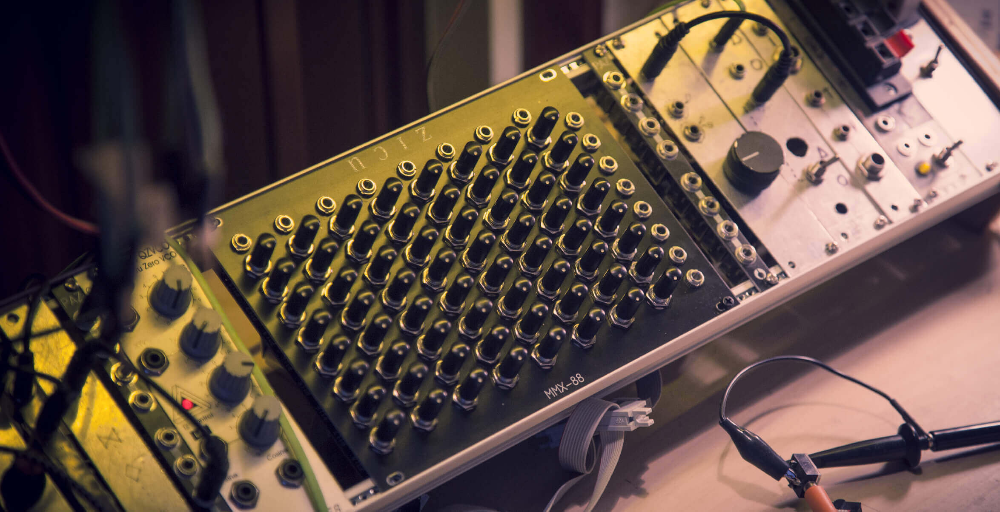

Eurorack modules
Creative signal routing tools
Electronic instruments for musical experimentation, in Eurorack format
MMX-88
8x8 Matrix Mixer
Specs:
- 8x mono inputs, 8x mono outputs (customizable)
- DC-coupled (customizable)
- sealed aluminum pots, ready for battle
- 45 mA +12V
- 45 mA -12V
- 0 mA 5V
- 1x gain (customizable)
- 36hp width
- 32 mm depth, with power cable connected (skiff-friendly)
- integrated reverse polarity and overvoltage protection
View on Modular Grid
In keeping with noizHARDWARE tradition, some features of this module are customizable:
- Mono or stereo inputs/outputs. (mono-to-mono, mono-to-stereo, or true stereo)
- Polarity switches (unipolar/bipolar), usually on outputs
- AC or DC coupling (can also add a switch for this)
- Gain, learn more...
- In general, if you see something interesting here, there's a good chance it can be applied in the Eurorack version as well, just ask!
>>>Price: 500eur + shipping.
Includes 4x M3x5mm screws and a power cable (10p-10p or 10p-16p)
Standard version ships immediately, if you're buying a customized version we'll talk about lead time.
MMX-83SJ
8x3 Stereo Matrix Mixer (featured in this video)
Specs:
- 8x stereo inputs — dual mono w/ normalling (customizable)
- 3x stereo outputs — dual mono w/ output normalling (customizable)
- AC or DC coupled (selectable per-channel with jumpers on the back of the module)
- variable gain controls in range [1x..20x] (customizable)
- peak indicator LEDs (sensitivity can be calibrated with trimmers on the back of the module)
- master sends (video timestamp)
- send to a stereo master, with its own output level
- 3x stereo sends on each channel, with individual output levels
- you can decide if the sends are pre/post master-send with jumpers on the back, on each junction (video timestamp)
- pre-master-send means the master send on a column doesn't have any influence on the other aux sends
- post-master-send means the master send knob can open/close the entire column
- a possible mod would be to add per-row switches on the front panel to select pre/post operation (video timestamp) (customizable)
- sealed aluminum pots, ready for battle
- 200 mA +12V
- 200 mA -12V
- 0 mA 5V
- 40hp width
- 32 mm depth, with power cable connected (skiff-friendly)
- integrated reverse polarity and overvoltage protection
connect only the left output to get a 50-50 mono mix, connect both to get a true stereo output (video timestamp) (this feature can be enabled/disabled with jumpers on the back of the module)
use AC for linear feedback (see video)
View on Modular Grid
In keeping with noizHARDWARE tradition, some features of this module are customizable:
- Mono or stereo inputs/outputs. (mono-to-mono, mono-to-stereo, or true stereo)
- Polarity switches (unipolar/bipolar), usually on outputs
- AC or DC coupling (can also add per-channel switches to select AC/DC operation)
- Gain, learn more...
- per-row switches on the front panel to select pre/post-master-send operation (video timestamp)
- In general, if you see something interesting here, there's a good chance it can be applied in the Eurorack version as well, just ask!
>>>Price: 700eur + shipping.
Includes 4x M3x5mm screws and a power cable (10p-10p or 10p-16p)
Standard version ships immediately, if you're buying a customized version we'll talk about lead time.
Eurorack module commissions
We can also design eurorack modules from scratch.
The creation process is similar to that of custom Mixers, get in touch and we'll discuss about it.
Ordering
For both standard and customized Eurorack orders, send an email to noizhardware@gmail.com
Payments can be made with PayPal or direct wire transfer
Shipping worldwide.
International Shipments (delivery address outside Europe) may be subject to import duties, value added taxes (VAT), and customs clearance times. Tariff rates vary from country to country. We don't collect VAT on behalf of the customer. We're not responsible for payment of import taxes. Please check with your local customs agency for rates and more information.